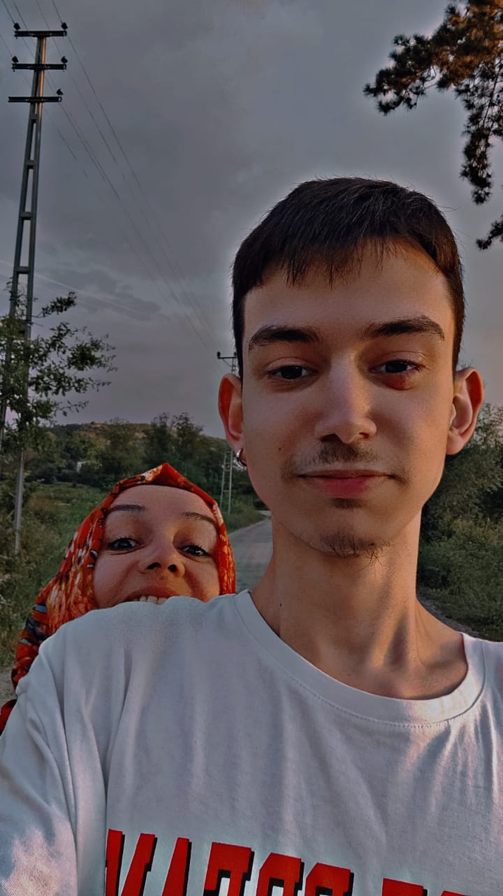
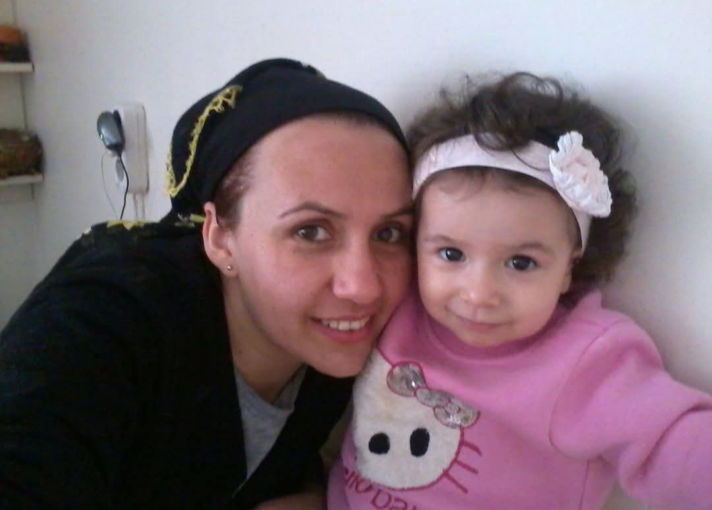
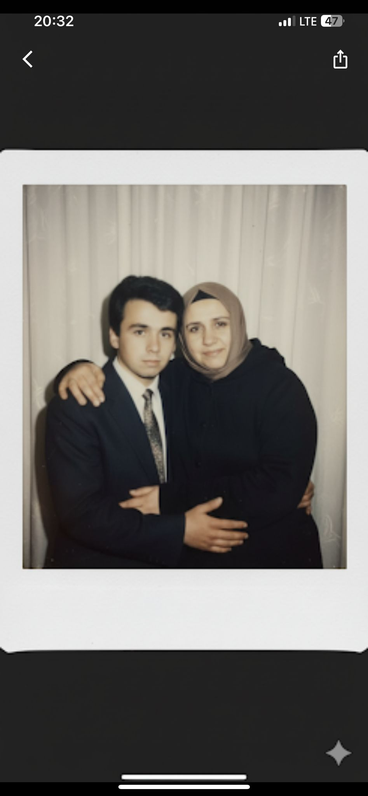

Bu kapının ardında sadece sana özel bir dünya var. Kilidi açmak için o özel yılı girer misin?
Şifreyi sanki yanlış yazdın kraliçem, tekrar dener misin?
Dünyanın En Güzel Kalpli Kadınına...

Canım annem... Bugüne kadar kahrımı çeken, her düştüğümde elimden tutup beni ayağa kaldıran, uykusuz gecelerimde bile şefkatini eksik etmeyen en büyük kahramanımsın. Hayatın getirdiği tüm zorluklar karşısında dimdik duruşunla bana her zaman en büyük ilham kaynağı oldun. Arkama her baktığımda gördüğüm o dağ gibi gölgen bana dünyaları fethedecek gücü veriyor. Senin sevginle büyümek, senin evladın olmak bu hayatta boynuma taktığım en gurur verici madalyam. İyi ki varsın, iyi ki benim annemsin... Seni kelimelerin anlatabileceğinden çok daha fazla seviyorum.
Aşağı kaydırır mısın? ✨

Sen sadece benim değil, bizim en güvenli limanımızsın... Kardeşimle birlikte bize harcadığın her damla emek, kalbimize ektiğin o tertemiz sevgi tohumları bizi biz yapan en değerli şey. İkimizin de hayatına dokunan o şefkatli ellerin, bizi her zaman iyiliğe, merhamete ve doğruya yönlendirdi. Senin o sıcacık gülüşün olmadan, o içimizi ısıtan sesin ve üzerimizdeki duaların olmadan biz hep eksik kalırız. Biz senin eserin, sen ise bizim her şeyimizsin kraliçem. Başımızın tacısın...
Asla Unutulmayacak Anılar...

Zaman bazı şeyleri bizden alıp götürse de, gerçek sevgiyi ve o güzel anıları asla silemez... Hasan dayım bedenen yanımızda olmasa da, o tertemiz ruhuyla, o içten ve güzel gülüşüyle her an bizimle. Biliyorum ki şu an gökyüzünün en güzel köşesinden sana bakıyor ve senin gibi bir kız kardeşi olduğu için inanılmaz bir gurur duyuyor. Senin o güzel kalbini kanatan, gözünden düşen her yaş bizim de canımızı yakıyor ama unutma annem; biz her zaman, her koşulda senin yanındayız. Onun o güzel anısını hep birlikte, en güzel şekilde yaşatacağız. Sen hep gülümse, o senin sadece gülmeni isterdi...
💌 Senin İçin Bir Zaman Kapsülü
Bu küçük site, sana olan sonsuz sevgimizin dijital bir yansıması sadece. Hayatın koşturmacası içinde ne zaman kendini yalnız hissedersen, ne zaman bir desteğe veya bir gülümsemeye ihtiyaç duyarsan, sadece 1983 şifresini yaz ve buraya gel.
Bil ki burada seni dünyalar kadar seven, senin için her şeyi yapmaya hazır olan evlatların var. Gözyaşların sadece mutluluktan aksın. Anneler günün kutlu olsun canım annem, seni çok ama çok seviyoruz...